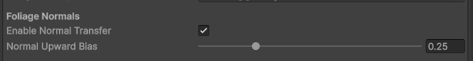
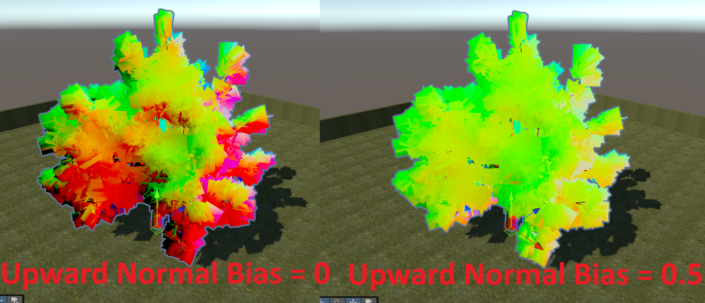
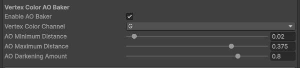
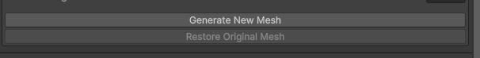
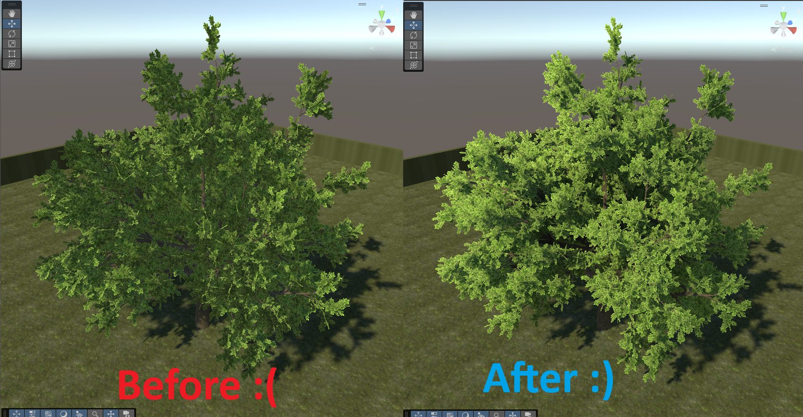

Normal Transfer & AO Bake
Once you're happy with your proxy mesh, you can generate the final output mesh. There are some advanced options you can tune, but for most cases the defaults are good enough.
Normal Transfer
The main feature of the package — transferring smooth canopy normals from the proxy mesh onto your foliage.

- Enable Normal Transfer — Keep this enabled if you want your foliage mesh to receive normals from the proxy mesh. Disable it if you only want to bake AO without changing normals.
- Proxy Normal Influence — Spherically interpolates each vertex normal toward the proxy mesh's normal by this amount. At
1the foliage fully adopts the proxy's smooth normals; lower values blend back toward the original normals. Range 0–1, default 1.0. - Normal Upward Bias — After calculating the new normal for each vertex, spherically interpolates it toward world up by this value. A small amount helps foliage catch sky light naturally. Range 0–1, default 0.25.
The image below shows the output mesh's vertex normals at different Normal Upward Bias values:

Vertex Color AO Baker
A bonus feature: the proxy mesh can also be used to bake high-quality Ambient Occlusion into your mesh's vertex colors.

- Vertex Color Channel — Which channel (R, G, B, or A) the AO is written into. Choose the channel your shader reads for AO. (TVE uses Green by default.) This channel is shared by both AO bakers below.
SDF AO
Bakes occlusion based on how deep each vertex sits inside the proxy mesh — interior canopy vertices get darker, outer leaves stay bright.
- Enable SDF AO Baker — Disable this if you do not want to modify the input mesh's vertex colors.
- AO Minimum Distance — The distance from the proxy surface (as a percentage of the mesh bounds) below which there is no vertex color AO. Range 0–0.5.
- AO Maximum Distance — The distance from the proxy surface (as a percentage of the mesh bounds) at which AO reaches maximum. Range 0–0.5.
- AO Darkening Amount — Controls the AO strength at and beyond AO Maximum Distance. Range 0–1.
Ground-Distance AO
Expand Ground-Distance AO for an optional second AO pass based on height above the base of the mesh — darkening the bottom of the plant and fading toward the top.
- Enable Ground-Distance AO Baker — Turns this pass on. Off by default.
- Ground AO Start Height — Height (as a percentage of the mesh bounds) where darkening begins.
- Ground AO End Height — Height (as a percentage of the mesh bounds) where darkening ends.
- Ground AO Darkening Amount — How strong the darkening is at the base.
Note
For baked AO to be visible, your shader must read the chosen vertex color channel. Many foliage solutions (such as TVE) support this out of the box, and it's easy to add to a custom shader — see Vertex Color AO in Shaders.
Generate the Output Mesh
When your options are set, simply click Generate New Mesh.

Your foliage is now renormalized:

You can optionally revert back to your original mesh and normals at any time with the Restore Original Mesh button. After generating once, that button toggles between your original and the most recently generated mesh.
Important
If your foliage has separate trunk/leaf meshes or LODs, you must also regenerate each Proxy Stealer mesh after generating the main foliage mesh. See Proxy Stealers.
Next
- Set up your material for Double-Sided Rendering so backfaces light correctly.